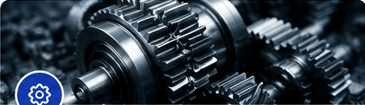

1. Engenharia Mecânica
Projetos, cálculos, laudos, inspeções, máquinas e equipamentos, estruturas metálicas e responsabilidade técnica.
- Projetos e memoriais técnicos
- Laudos e pareceres
- Inspeções e diagnósticos
- ART e responsabilidade técnica